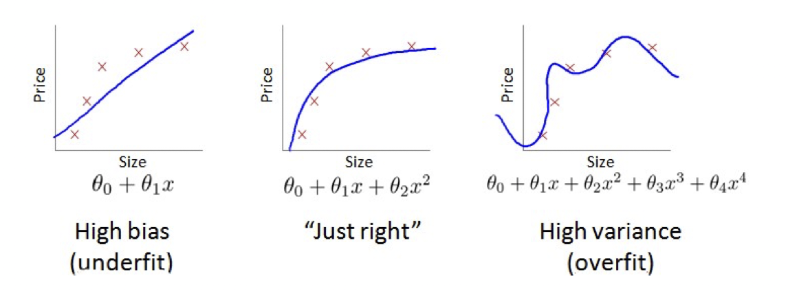
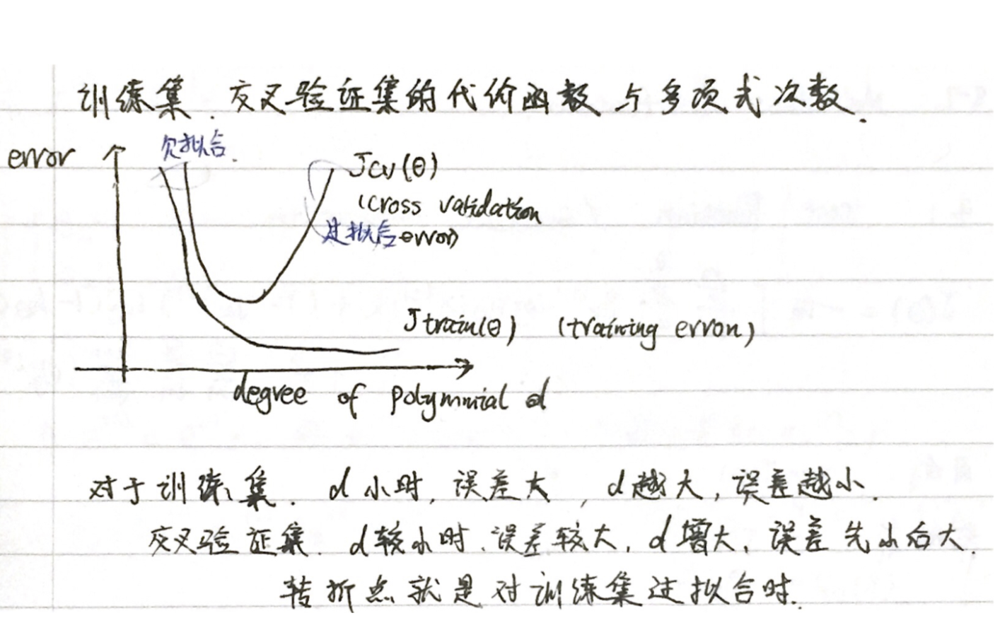
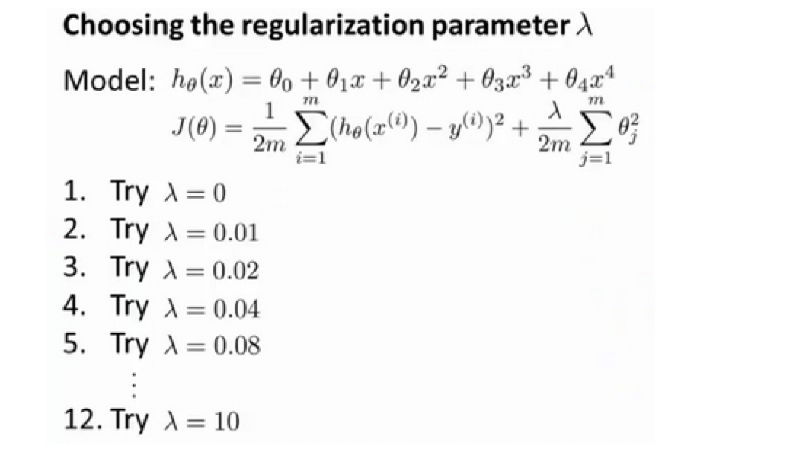
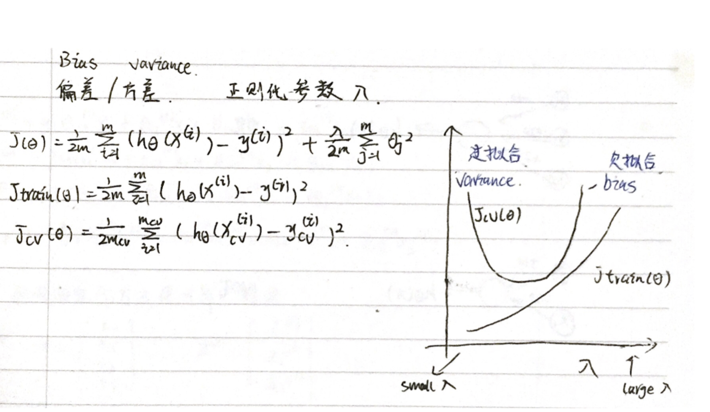
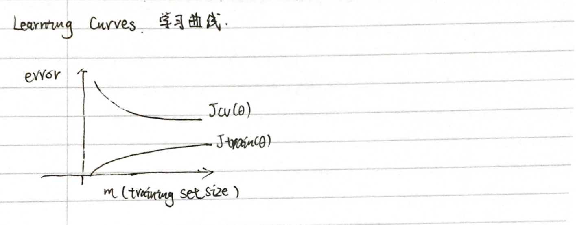
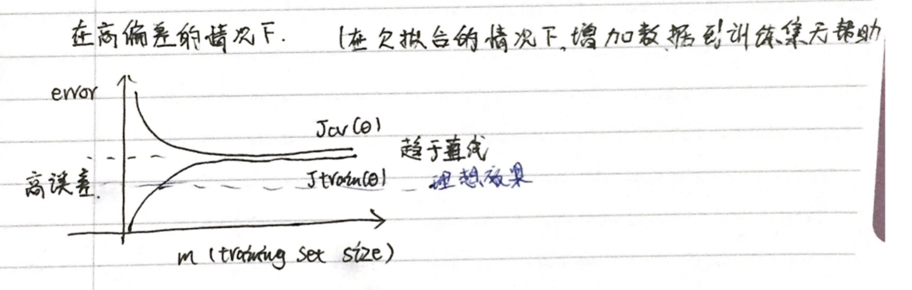
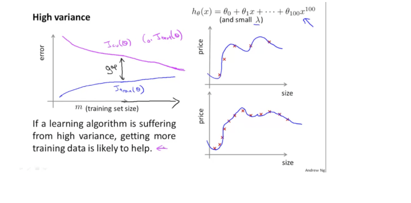
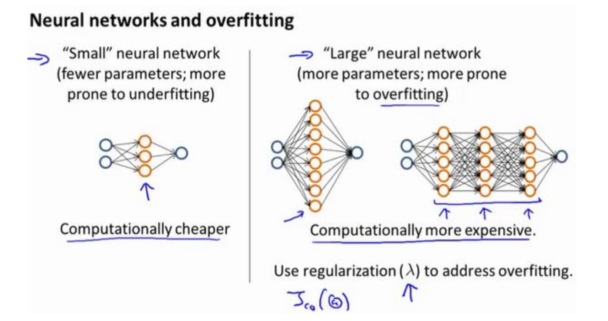

数据集划分
为了检验算法是否过拟合，我们将数据分成训练集和测试集，通常用70%的数据作为训练集，用剩下30%的数据作为测试集。
很重要的一点是训练集和测试集均要含有各种类型的数据，通常我们要对数据进行“洗牌”，然后再分成训练集和测试集。
测试集评估在通过训练集让我们的模型学习得出其参数后，对测试集运用该模型，我们有两种方式计算误差：
- 对于线性回归模型，我们利用测试集数据计算代价函数$J$
- 对于逻辑回归模型，我们除了可以利用测试数据集来计算代价函数外：
交叉验证集/模型选择
在多项式回归中，我们总是尝试不同的多项式次数（degree），形成了不同的预测模型。
对于 degree 的确定，是我们对于模型的选择（Model Selection），正如我们在线性回归中确定 θ 一样。在线性回归中，我们通过训练集确定模型，测试集来评估模型的泛化能力。在多项式回归中，我们通过训练集获得了参数 θ ，而通过测试集确定了模型，那么，这两个集合用完了，我们就缺少评估模型泛化能力的数据集。
鉴于此，引入了交叉验证集（Cross Validation Set），“交叉”二字体现了一种承上启下的关系，他通过训练集获得的结果，选择了模型，并将该模型交给测试集进行评估：
- 训练集：60%，确定参数 θ
- 交叉验证集：20%，进行模型选择。
- 测试集：20%，评价模型预测能力。
模型选择的方法为：
- 使用训练集训练出10个模型
- 用10个模型分别对交叉验证集计算得出交叉验证误差（代价函数的值）
- 选取代价函数值最小的模型
- 用步骤3中选出的模型对测试集计算得出推广误差（代价函数的值）
Train/validation/test error
Training error:
$J_{train}(\theta) = \frac{1}{2m}\sum_\limits{i=1}^{m}(h_{\theta}(x^{(i)})-y^{(i)})^2$
Cross Validation error:
$J_{cv}(\theta) = \frac{1}{2m_{cv}}\sum_\limits{i=1}^{m}(h_{\theta}(x^{(i)}_{cv})-y^{(i)}_{cv})^2$
Test error:
$J_{test}(\theta)=\frac{1}{2m_{test}}\sum_\limits{i=1}^{m_{test}}(h_{\theta}(x^{(i)}_{cv})-y^{(i)}_{cv})^2$
偏差与方差
在机器学习中，偏差（bias）反映了模型无法描述数据规律，而方差（variance）反映了模型对训练集过度敏感，而丢失了数据规律，高偏差和高方差都会造成新数据到来时，模型给出错误的预测。
通过诊断（Diagnose）模型是出现了高偏差问题还是高方差问题，我们能对症下药，采取不同的解决策略。

我们通常会通过将训练集和交叉验证集的代价函数误差与多项式的次数绘制在同一张图表上来帮助分析：

Bias/variance
Training error: $J_{train}(\theta) = \frac{1}{2m}\sum_\limits{i=1}^{m}(h_{\theta}(x^{(i)})-y^{(i)})^2$
Cross Validation error: $J_{cv}(\theta) = \frac{1}{2m_{cv}}\sum_\limits{i=1}^{m}(h_{\theta}(x^{(i)}_{cv})-y^{(i)}_{cv})^2$
对于训练集，当 $d$ 较小时，模型拟合程度更低，误差较大；随着 $d$ 的增长，拟合程度提高，误差减小。
对于交叉验证集，当 $d$ 较小时，模型拟合程度低，误差较大；但是随着 $d$ 的增长，误差呈现先减小后增大的趋势，转折点是我们的模型开始过拟合训练数据集的时候。
如果我们的交叉验证集误差较大，我们如何判断是方差还是偏差呢？根据上面的图表，我们知道:
训练集误差和交叉验证集误差近似时：偏差/欠拟合
1 | Jtrain(θ) is large |
交叉验证集误差远大于训练集误差时：方差/过拟合
Jtrain(θ) is small
Jcv(θ)>>jtest(θ)
正则化和偏差/方差
正规化（Regularization）能帮我们解决过拟合问题， λ取值越大，对参数 θ 的惩罚力度就越大，能够帮助解决过拟合问题，但是，如果惩罚过重，也会造成欠拟合问题，即会出现高偏差。如果 λ 取值较小，则意味着没有惩罚 θ ，也就不能解决过拟合问题，会出现高方差。
为了选择模型和正则化项λ，我们需要：
创建一个lambda表，通常是 0-10之间的呈现2倍关系的值（如:$0, 0.01, 0.02, 0.04, 0.08, 0.15, 0.32, 0.64, 1.28, 2.56, 5.12,10$ ）共12个。 我们同样把数据分为训练集、交叉验证集和测试集。

选择$\lambda$的方法为：
- 使用训练集训练出12个不同程度正则化的模型
- 用12个模型分别对交叉验证集计算的出交叉验证误差
- 选择得出交叉验证误差最小的模型
- 运用步骤3中选出模型对测试集计算得出推广误差，我们也可以同时将训练集和交叉验证集模型的代价函数误差与λ的值绘制在一张图表上：

• 当 $\lambda$ 较小时，训练集误差较小（过拟合）而交叉验证集误差较大.
• 随着 $\lambda$ 的增加，训练集误差不断增加（欠拟合），而交叉验证集误差则是先减小后增加
学习曲线
学习曲线就是一种很好的工具，我经常使用学习曲线来判断某一个学习算法是否处于偏差、方差问题。学习曲线是学习算法的一个很好的合理检验（sanity check）。学习曲线是将训练集误差和交叉验证集误差作为训练集样本数量（$m$）的函数绘制的图表。
即，如果我们有100行数据，我们从1行数据开始，逐渐学习更多行的数据。
在少数几个数据点（如1,2或3）上训练一个算法将很容易产生0个错误，因为我们总是可以找到一个接近这些点数的二次曲线。因此：
随着训练集变大，二次函数的误差增加。
经过一定的m或训练集大小后，误差值将平稳。
根据样本的大小与误差的关系我们可以画出一般的学习曲线模样：

如果模型出现了高偏差，即出现了欠拟合，学习曲线随样本数目的变化曲线如下图所示，即增加样本数目，仍无法显著降低交叉验证集误差，即无法提高模型的泛化能力：

如果模型出现了高方差，即出现了过拟合，学习曲线随着样本数目变化的曲线如下图所示，即增加样本数目，可以显著降低交叉验证集的误差，提高模型的泛化能力：

怎样改善
获得更多的训练样本——解决高方差
尝试减少特征的数量——解决高方差
尝试获得更多的特征——解决高偏差
尝试增加多项式特征——解决高偏差
尝试减少正则化程度λ——解决高偏差
尝试增加正则化程度λ——解决高方差

当神经网络的结构简单时，则易出现高偏差。
当神经网络的结构过于复杂时，则易出现高方差，此时可以通过增大λ来解决。
通常选择较大的神经网络并采用正则化处理会比采用较小的神经网络效果要好。
对于神经网络中的隐藏层的层数的选择，通常从一层开始逐渐增加层数，为了更好地作选择，可以把数据分为训练集、交叉验证集和测试集，针对不同隐藏层层数的神经网络训练神经网络，
然后选择交叉验证集代价最小的神经网络。